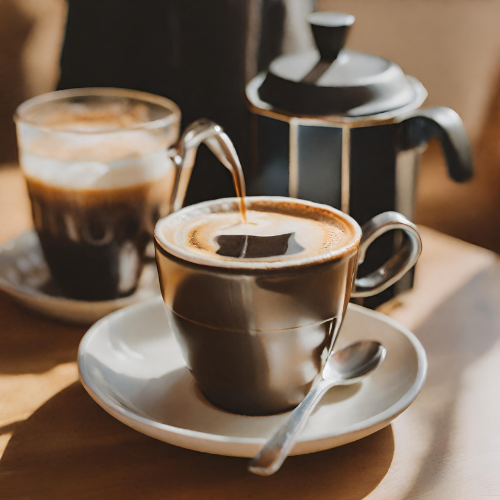

Amerikano
Americano tarifi için öncelikle espresso elde etmelisiniz. 7gr toz kahveden 90°C sıcaklıktaki suyun 9 bar (atmosfer) basınç ile 35 saniye boyunca akarak 25-30 ml arasında espresso elde edin. İçme suyunu makinenizin ısıtma çubuğu ile veya farklı bir kaynak (kettle gibi) kullanarak ısıtın. Isıttığınız suyu maksimum 100ml olacak şekilde espresso üzerine ekleyin. Americano kahveniz hazırdır. Uyarılar: Sıcak suyu kaynar haldeyken espresso üzerine eklemeyiniz, kullanacağınız suyun kaynadıktan sonra bir-iki dakika dinlendirilmiş olmasına dikkat ediniz. Americano içmek isteyen kişiye espresso üzerine eklenecek sıcak su miktarını sorabilir, miktar ayarını içecek kişiye bırakabilirsiniz. Single espresso üzerine maksimum 100ml sıcak su eklenmesi önerilmektedir.